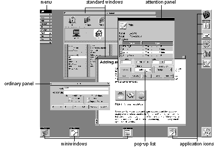
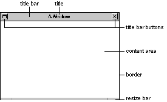
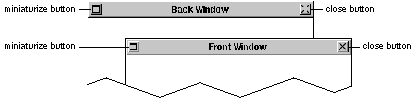
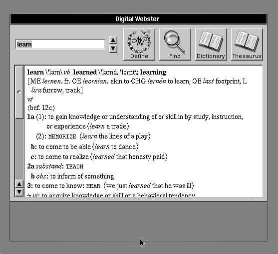
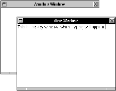
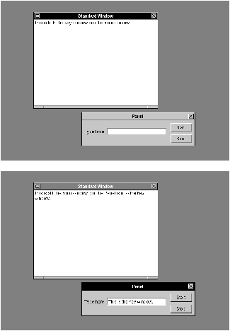

Release 3.3 Copyright ©1995 by NeXT Computer, Inc. All Rights Reserved.
| 4 |
The Window Interface to Applications
| The NEXTSTEP user interface is window-based. Each window is placed on the screen by a particular application, and each application typically owns a variety of different windows. The screen shown below has several kinds of windows belonging to several applications. |
|  |
| This chapter discusses windows in general--standard windows, panels, menus, pop-up and pull-down lists, miniwindows, and application icons--before going on to discuss standard windows in particular. For more information on panels and menus, see Chapter 5, "Panels," and Chapter 6, "Menus," respectively. For more information on pop-up and pull-down lists, see Chapter 7, "Controls." Miniwindows and application icons are described in Chapter 1, "A Visual Guide to the User Interface." |
| How Windows Work |
| Every window has a content area, where the application is free to draw (although the Application Kit draws default miniwindows and application icons for you). Standard windows, panels, and menus also have a title bar above the content area, and a border surrounding both the content area and title bar.
The title bar is the center of control for the window. It holds the window's title, if it has one, and may contain buttons that can be used to dismiss it from the screen. If a window has a title bar, users move the window by dragging it by its title bar. Panels and standard windows can also have a resize bar at the bottom, below the content area but within the border. By dragging any of the regions of the resize bar, the user can alter the size and shape of the window. The resize bar is the only window control located outside the title bar. The parts of a window are illustrated below. |
|  |
| Window Order
Windows on-screen are ordered from front to back. Like sheets of paper loosely stacked together, windows in front can overlap, or even completely cover, those behind them. Each window has a unique position in the order. When two windows are placed side-by-side, one is still technically in front of the other. If any window could be in front of any other window, then small but important windows--like menus and docked icons--might get lost behind larger ones. Windows that require user action, like attention panels and pop-up lists, might disappear behind another window and go unnoticed. To prevent this, all the windows on-screen are organized into tiers. When two windows belong to the same tier, either one can be in front. When two windows belong to different tiers, however, the one in the higher tier will always be above the other. on-screen windows are divided into these seven tiers: |
| Windows that appear in a spring-loaded mode--pop-up lists, pull-down lists, and menus that come to the cursor--are assigned the frontmost tier. (Having menus come to the cursor is an option that the user can enable with the Preferences application. It's described in "Bringing the Main Menu to the Cursor" in Chapter 6.) Spring-loaded windows remain on-screen only while the user holds a mouse button down, so they only momentarily obscure other windows. Putting them in the first tier guarantees that they won't appear in back of another window. | ||
| Attention panels are assigned to the second tier. Like spring-loaded windows, they're only temporarily on-screen. But unlike spring-loaded windows, the user must do something to dismiss them, rather than continue an action to keep them visible. Keeping an attention panel in front, where it can't be covered by other windows, confronts the user with it until it's dismissed and thus encourages prompt user action. | ||
| The main menu is assigned the next tier back. In the absence of an attention panel or spring-loaded window, the usual case, it's the frontmost window on-screen. |
| Writing Note: The Meaning of Window
In documentation for users, the term window generally refers only to standard windows, though panels and menus are acknowledged to be windows of a special type. Miniwindows, lists, and icons are referred to only by their specific names; they should not be included within the generic term window as this would imply common behavior that's lacking. |
| Other menus are assigned to a tier just below the main menu. They can cover each other, but not the main menu. | ||
| Docked application icons occupy the fifth tier. They can be covered by lists, attention panels, and menus, but not by the ordinary windows of your application. | ||
| Floating panels are in the sixth tier. Floating panels are defined and discussed in Chapter 5. | ||
| All other windows are grouped in the seventh--the last and largest--tier. Most of the windows seen on-screen are in this tier. They can cover each other, but can't come in front of the dock, menus, attention panels, or spring-loaded windows. |
| This seven-tier system keeps attention panels, menus, and docked application icons in view, and thus readily available to the user; it prevents them from being inadvertently lost in a large pile of windows. Although attention panels, menus, and docked application icons can cover other windows, the user can get them out of the way when needed. Menus can be moved to the side or closed, and the dock can be slid mostly off-screen. Attention panels should be attended to and dismissed.
To get the user's attention, when a window is first placed on-screen it comes up at the front of its tier. Note: Even when a window is totally obscured by other windows, it's still considered to be on-screen; it retains its ranking in the order and can be exposed by moving the windows in front to the side.
Window Behavior Windows respond to user actions in the following ways: |
| Any window can be brought to the front of the screen, relative to other windows in its tier. | ||
| Any window with a title bar can be moved to a new location on the screen, as can any miniwindow or application icon. | ||
| Any window with a resize bar can be resized. | ||
| A window with the appropriate buttons in its title bar can be closed or miniaturized. |
| A window's title bar can display two buttons: |
| Miniaturize button | Clicking this replaces the window with its miniwindow counterpart. The miniwindow represents the window on-screen and gives the user access to it. Double-clicking the miniwindow causes it to disappear and the window that was miniaturized to reappear. | |
| Close button | Clicking this removes the window from the screen. |
| When the user clicks a button in the title bar, the action of the button is performed. The click doesn't count as "clicking in a window" for the purpose of bringing the window to the front, making it the key window, or activating an application (the key window and active application are discussed in "Application and Window Status" in this chapter).
Title bar buttons are illustrated below. The window in front has both buttons as they normally appear. The miniaturize button is on the left and the close button is on the right. The window in back shows a broken close button. The close button should be broken when the user would lose work by closing the window--for example, when the window displays a document that the user has edited but not saved. More information on the miniaturize and close buttons is in "Implementing Windows" in this chapter. |
|  |
| Reordering
Clicking in a window brings it to the front of its tier, provided that the click isn't in a title bar button. The window is reordered immediately as the mouse button is pressed. If the user is dragging the window to a new location, this lets the window assume its reordered position before being moved. Another way the user can reorder windows is to press the Command key while pressing the up-arrow or down-arrow key. Command-up arrow moves the backmost panel (if it's in the lowest tier) or standard window to the front of the tier. Command-down arrow moves the frontmost one to the back.
Moving The user can drag any window by its title bar (if it has one). The action of pressing and releasing the mouse button to drag the window also counts as a click and brings the window to the front of its tier.
Resizing |
|  |
| If a window has a resize bar, the user can change the size of the window by dragging the resize bar. An outline of the window edge follows the cursor, as shown in the figure above. When the user releases the mouse button, the window resizes to the outline.
Closing The close button removes a window from the screen. What this means depends on the type of window: |
| Menus and panels | A menu that's closed is removed from the screen, but the user retains a way to retrieve it quickly through a command in another menu. Panels that are closed are retrievable in the same way. (See Chapter 6 for more information on menus.) | |
| When a panel that was closed is returned to the screen, it assumes its former size and location, and it retains its former state. From the user's point of view, and programmatically, it's the same panel that was closed. | ||
| Standard windows | Closing a standard window usually removes it from the application as well as from the screen. From the user's point of view, the same window can't necessarily be made visible again. The application might create a new window with the same title and a similar display, but there might be differences. The selection might not be preserved, and the new window won't necessarily be located in the same place or have the same shape as the old one, especially if the user had moved or resized the window that was closed. |
| Programming Note: Windows and the Application Kit
Everything that this section, "How Windows Work," discusses is automatically handled by the Application Kit Window class and its subclasses. For example, when the user closes the key window, a new one is automatically chosen. The few decisions you must make are discussed later under "Implementing Windows." |
| Miniaturizing
Miniaturizing a window removes it from the screen without destroying it or its contents. From the user's point of view, the window is transformed into a miniwindow. Double-clicking the miniwindow reverses the miniaturization. Most standard windows and some panels have a miniaturize button. Windows that have a miniaturize button can be miniaturized using either the button or the standard Miniaturize Window menu command. A group of windows representing a single document can be miniaturized into a single miniwindow, as described under "The Document Menu" in Chapter 6. Users can't work in a miniaturized window, but programs can continue to alter the window's display. For example, if you begin compiling a program in a Terminal window, and then miniaturize the window, you'll see any error messages written by the compiler when you return the window to the screen. Miniaturizing differs from closing in a number of ways: |
| Miniaturizing preserves the window as it was last seen on-screen. A window that's closed can't necessarily be retrieved in the same state. | ||
| Miniaturizing a window leaves behind a miniwindow so that it can be brought back to the screen. Closing a window doesn't provide the user with a way of getting it back. | ||
| Miniaturizing a window that displays a file won't close the file or change the way it's displayed. Closing a window usually closes the file it displays. |
| Hiding and Retrieving Windows
The Hide menu command lets the user clear the screen of all the windows belonging to an application. This opens up the workspace so that it's easier to work in another application. When an application is hidden, only its application icon remains on-screen. When the user double-clicks the icon, the hidden windows reappear on-screen. Users can resume working in the application, picking up again at exactly the point where they left off. Double-clicking an application icon has one other effect: It activates the application (as discussed in the next section), and so may cause the menus and panels of another application to disappear, while those of the newly activated application reappear. Double-clicking the icon for a running application activates it and brings its windows to the front, even if the application wasn't hidden. (The user can also bring covered windows forward using commands in the Windows menu, as described in Chapter 6.) The application's menus also return to the screen. If the user holds down the Command key while double-clicking an application icon, the application is activated as usual, but in addition all other applications are hidden. Note: A window that's completely obscured by other windows is "covered," but not "hidden" in the sense used here. A covered window can be made visible by moving the windows in front of it to the side. A hidden window can't be--it's completely removed from the workspace.
Application and Window Status Since more than one application can run at a time, the screen is likely to display windows for a variety of different applications. The Workspace Manager is one application that will often have a window on-screen. Some users will also run Mail and a spreadsheet, or perhaps a word processor and Digital WebsterTM(a dictionary and thesaurus application), at the same time as other applications. The user must be able to pick a particular application, and a particular window in that application, to work in. The application that the user is currently working in is known as the active application; the windows that are the current focus of user attention in the active application are the key window and the main window. The key window and main window are usually one and the same. The two terms identify different functional roles that can be assumed by the same window: |
| The key window is the window that receives characters from the keyboard. | ||
| The main window is the window containing the selected target for controls. |
| These three concepts--the active application, key window, and main window--refer not to inherent properties of applications and windows, but to their status at a particular point in time. They're discussed more fully in the three sections that follow.
The Active Application Out of all running applications, at most one is selected to be the active application (the principal application the user is working in). An application must be activated--made to be the active application--before the user can type in its windows or use its menus. The active application differs from other running applications in four ways: |
| It's the only application with visible menus. When an application is deactivated, its menus are hidden from view. When it's reactivated, they're restored to the screen. | ||
| It's the application that owns most, if not all, of the panels that are visible on-screen. In general, panels behave like menus: They hide when the application isn't active and return to the screen when the application is reactivated. In exceptional cases, however, you may choose to leave a panel on-screen even when the application isn't active. (See Chapter 5 for guidelines on when it's appropriate to allow a panel to persist.) | ||
| It's the application that receives the user's keyboard actions. Typing and keyboard alternatives can affect only the active application. When there's no active application, the user's keystrokes have no effect. | ||
| It's the application that contains the key window and main window (if there is a current key window or main window), and its windows are likely to be in front of the windows of other applications. |
| Application Activation
In general, the task of selecting the active application is left to the user. With one exception, an application never becomes active unless the user does something to activate it. The user's action can be direct, such as starting up the application or clicking in one of its windows, or indirect, such as having one application send a message to another application. The exception is that when the user hides or terminates an application, the system guesses which application should be activated next (based on which applications have on-screen windows, as described below). This method saves the user from always having to click to choose the new active application. An application is activated when: |
| The user starts it up, unless the user activates another application while the first one is starting up. | ||
| The user double-clicks a miniwindow belonging to the application, or double-clicks the application's freestanding or docked icon. Double-clicking a docked icon starts up the application if it's not already running. | ||
| The user clicks within one of the windows belonging to the application, provided the window isn't a miniwindow or application icon. | ||
| It receives a message from another application, if the message asks it to do something that may require interaction with the user. A message from the Workspace Manager asking the receiver to open a file is one such message. A message sent to Digital Webster asking it to define a word is another. (See "Activating an Application" later in this chapter for details.) | ||
| It has the frontmost panel or standard window on-screen after the current application is hidden or terminated. |
| Application Deactivation
There can be only one active application per workspace (that is, one per Window Server) at a time. Whenever the user chooses a new active application, the previous one is automatically deactivated. The Application Kit and Workspace Manager take care of this task. The active application is also deactivated when: |
| The user hides its windows (by using the Hide command). | ||
| The user terminates it (by choosing the Quit command). |
| In either case, if another application has panels or standard windows on-screen, then the Workspace Manager activates the application with the frontmost panel or window. If no other applications have panels or standard windows on-screen, then no application becomes active.
In addition, an application should deactivate itself just before sending a message to another application, if the intent of the message is to have the other application become active. (See "Activating an Application" later in this chapter for details.) Note: A deactivated but running application can still do work. It's "deactivated" only in the sense that it no longer is the active application, so the user can't interact with it without activating it again.
The Key Window Users expect to see their actions on the keyboard and mouse take effect not only in a particular application, but also in a particular window of that application. Each user action is associated with a window by the Window Server and Application Kit. Before acting, the user needs to know which window will be affected--there should be no surprises. Since the mouse controls a cursor, it's quite easy for the user to determine which window a mouse action is associated with. It's whatever window the cursor is over. But the keyboard doesn't have a cursor, so there's no natural way to determine where typing will appear. The window associated with keyboard actions, the one where typing will appear, is known as the key window. To mark the key window for users, the Application Kit highlights its title bar (by turning it black). Key window highlighting is illustrated below. |
|  |
| You can think of the highlighting as a kind of cursor for the keyboard. It shifts from window to window as the key window changes. Key-window status also moves from application to application as the active application changes. Only one window on the screen is marked at a time, and it must be in the active application. There's just one key window per machine and keyboard. Even a system that has two screens, but only one keyboard, has at most one key window.
Note: A window doesn't have to become the key window to receive, and act on, keyboard alternatives. It does, however, have to be in the active application. Since the key window belongs to the active application, its black title bar has the secondary effect of helping to show which application is currently active. The key window is the most prominently marked window in the active application, making it "key" in a second sense: It's the main focus of the user's attention on the screen.
The Main Window The main window is the standard window where the user is currently working. It's the focus of user actions carried out in panels and menus. The Find panel, for example, requires the user to supply information by typing it. Since the panel is the destination of the user's keystrokes, it's marked as the key window. But the panel is just an instrument through which users can do work in another window--the main window. Whenever a standard window becomes the key window, it also becomes the main window. When key-window status shifts from a standard window to a panel, main-window status remains with the standard window. So that users can pick out the main window when it's not the key window, the Application Kit highlights its title bar in dark gray. If the main window is also the key window, it has only the black highlighting of the key window. The following figure illustrates the main window when it's marked as the key window and when it's not. A menu command might affect either the key window or the main window, depending on the command. For example, the Paste command can be used to enter text in a Find panel. But the Save command saves the document displayed in the main window, and the Bold command turns the current selection in the main window bold. For this reason, user actions in a panel or menu are associated with both the key window and the main window: |
| An action is first associated with the key window. | ||
| If the key window is a panel and it can't handle the action, the action is next associated with the main window. |
| Note that this order of precedence is reflected in the way windows are highlighted: The key window is always marked, but the main window is marked only when it's not the key window.
The main window is always in the same application as the key window, the active application. It follows the key window as the user's actions shift the focus from window to window and from application to application. |
|  |
| How Windows Become the Key Window and Main Window
Whenever possible, the user, rather than the application, selects the key window and main window. This section describes how this happens and the part that the Application Kit plays. Later in this chapter, "Choosing the Key Window" describes when and how an application needs to choose its own key window.
In the Active Application In the active application, the user can select a new key window by clicking in it. If the window is a standard window, it's also made the main window. If it's a panel that accepts keystrokes, it's highlighted as the new key window, but the former main window retains its status and is highlighted in dark gray. The user can't select a main window without also making it the key window. The Application Kit chooses a new key window (or main window) for the active application whenever the user closes or miniaturizes the window currently having that status. Even if the application has no more windows on-screen, and thus no new key window can be chosen, the application still remains active: It's up to the user to decide whether to continue working in it.
When an Application Is Activated When an application is activated, one of its windows is made the key window and one (usually the same one) is made the main window. Again, whenever possible, the user makes the selection: |
| If the user activates the application by clicking in a window that accepts keystrokes, it becomes the key window. If the window is a standard window, it's also made the main window. | ||
| If the user activates the application by double-clicking a miniwindow, the window it represents again appears on-screen and becomes the key window and main window. |
| If an application is activated without the user directly selecting a new key window, the user's previous selections are honored. For example, if the user reactivates an application by double-clicking its icon, the previous key window and main window are restored.
Note: When a new application is activated, its key window may be highlighted before the former key window (in the deactivated application) loses its highlighting. This is a consequence of a multitasking environment. Users can begin working in one process (the new active application) before their instructions to another process (the previous active application) have been completed. Although the former key window may retain its highlighting for a short time, it's no longer the key window; all keyboard actions are associated with the new active application.
The Results of Clicking in a Window Clicking in a window has two separate, but related, results: |
| The window usually becomes the key window (and usually also the main window), and its application is activated. Standard windows always become the key window when clicked, but panels might not, as described in Chapter 5. | ||
| The window comes to the front of its tier. |
| The first is a change in the window's status, the second in its position on-screen.
Both results are required to make the window available to the user to work in. The window needs to be reordered in front of other windows so that its contents aren't covered. It also must become the key window for the user to be able to type in it and for it to receive menu commands. For a window to become the key window, its application must be activated. In NEXTSTEP, however, these two results of a mouse click, while logically related, are not inseparable. If the click is in the window's title bar and is modified by the Alternate key, it brings the window to the front, but doesn't make it the key window or activate its application. Alternate-clicking in the title bar thus lets users rearrange and reorder windows on the screen without changing the current key window, main window, or active application. |
| Implementing Windows |
| The section gives a few guidelines for designing and placing various kinds of windows.
Designing Windows The only windows that have a fixed size are miniwindows and icons. The initial size of all other windows is determined by the application. Generally, standard windows are larger than panels and panels are larger than menus, but there are no fixed rules. When designing a panel or standard window, you should keep a substantial proportion of it free of objects that respond to the first click. It shouldn't be difficult for the user to find a place to click within the window to select it. You should try to limit of the number of panels and standard windows that the user needs to use your application. Having too many windows results in a cluttered screen that can confuse the user. Even two windows can be too many if users can't tell which window they're supposed to work in. And a cluttered screen can frustrate the user's attempts to work in two or more applications at once.
Placing Windows One of the principles of the NEXTSTEP user interface is that users are in control of their own workspace. Part of this control is the freedom to rearrange windows to suit the users' own tastes and needs. However, if a window that's been dismissed and then brought up again doesn't appear in its previous location, the user's work of rearranging windows is thrown away. The user might have to move the window back to its previous location every time the window is brought up. To avoid making the user rearrange windows unnecessarily, each panel and non-document standard window should remember its own location. The next time the window is brought up, it should appear in the location it last appeared in. For example, suppose the user brings up a Find panel, moves it to a new position, and then closes it. The next time the user brings up the Find panel, it should come up in the new position--even if the user has quit and restarted the application in the meantime. Whether document windows should also remember their position depends on the application. For example, Digital Librarian document windows don't remember their positions because users typically open many documents at once, and thus need the application's help in positioning the windows. However, an application such as a drawing program that's typically used for editing one file at a time should probably let the user determine each document window's default location. The first time a window comes up, its position is determined by the application. To ensure a consistent user interface, all applications should follow these guidelines for initial locations of windows: |
| When an application starts up, its main menu should appear in the upper left corner of the screen, unless the user has specified a different location for it. | ||
| Standard windows should come up to the right of the main menu, allowing enough room for submenus that might later be attached to the main menu. Some applications also allow room for panels to come up to the left of the standard window and below the main menu. | ||
| Attention panels should come up centered in the upper part of the screen, where they won't be overlooked. | ||
| No part of any window (other than miniwindows and icons) should be placed off-screen, unless the user has put it there. |
| Programming Note: Saving Window Positions
Three methods exist to help panels and non-document standard windows remember their window position. Calling the setFrameAutosaveName: method once per window makes the window save its position in the defaults system whenever necessary. The next time the window comes up, it automatically appears at the last-saved position. A less automated way of remembering the window position is to call saveFrameUsingName: every time you wish to save the position, and call setFrameUsingName: to set the window's position when it's being brought up. The methods discussed above aren't appropriate for document windows, since there's no easy way to guarantee unique names for documents. If your application saves the positions of its document windows, you should use the saveFrameToString: method to save a representation of the window's position into the document itself. When opening the document, you should position its window using setFrameFromString:. |
| Implementing Standard Windows |
| Standard windows are the most widely used type of window and the principal type for all applications. If an application lets the user edit files, each file should be displayed in a separate standard window. If the application is a game, the game board should be in a standard window, and if the application is a simple accessory like a clock, the clock face should occupy a small standard window of its own.
Every standard window has a title bar; most also have window controls--a resize bar, close button, and miniaturize button. This section discusses choosing the window's title and everything that you need to implement when the window controls are present. It also describes cases when it's acceptable to omit the window controls.
Choosing a Title If a window displays a document that can be saved, the title bar of the window should display the name of the document, followed by an em dash and the path of the folder where the document is located. The em dash is set off by two spaces on each side. For example: |
| jobRecords -- /Net/machine/home/records |
| The title bar is not usually a good place to show status, such as what the application is currently doing. It's usually clearer to display this status in the window or in a panel. Status within a window is often displayed in small, dark gray text (as in the Workspace Manager File Viewer). |
| Programming Note: Implementing Titles of Document Windows
You should use the setTitleAsFilename: method of the Window class to set the title of a document window. For example, to produce the window title |
| jobRecords -- /Net/machine/home/records |
| you should send a setTitleAsFilename: message with the argument "/Net/machine/home/records/jobRecords". |
| Using the Resize Bar |
| Most standard windows--especially those with scrollable contents--should have a resize bar. It gives users control of their environment by letting them choose how much screen space to devote to the contents of the window.
If a window has a resize bar, you should be careful that the window remains as useful and attractive as possible, no matter how small or large it becomes. Each window can constrain its shape so that it doesn't become too big or too small, or so that it grows and shrinks in unit amounts. For example, the Workspace Manager File Viewer grows and shrinks only by the width of its browser columns, which eliminates the possibility of showing only a partial column.
Using the Miniaturize Button Except when an application is useless without a particular standard window, each standard window should have a miniaturize button. When a window is miniaturized, it should remain miniaturized until the user explicitly unminiaturizes it. Because a miniaturized window isn't likely to be foremost in the user's thoughts, the application should never alter a miniaturized window without the user's knowledge. However, it's fine for an application to continue doing some work in a miniaturized window, as long as the user requested that the work be done. For example, the Terminal application completes commands that the user entered in a Terminal window. But it's unacceptable, for example, to change the font in a miniaturized window unless the user specified a font change for all windows. The miniaturize button has a counterpart command in the Windows menu that miniaturizes the key window. You can also provide a command in the Document menu that miniaturizes several related windows into a single miniwindow. See "The Windows Menu" and "The Document Menu" in Chapter 6 for information on how these commands work.
Using the Close Button Most standard windows have a close button. However, sometimes the close button isn't necessary. For example, the Digital Webster application is useless if its only standard window isn't visible, so the window has no close button. Your application should break the close button whenever the user would lose work by closing the window. From the user's point of view, a broken close button means that the application won't let the user lose work by accidentally closing the window. If the user tries to close a window that has a broken close button or tries to quit its application, the application should bring up a Close or Quit panel, respectively. (See Chapter 5 for more information on these standard panels.) Note: If an application uses multiple windows to display a single file, then all the windows' close buttons should break when unsaved work is in any window. However, the application shouldn't bring up a Close panel until the user closes the last window for the file. An example of breaking the close button is in the Mail application. Mail breaks a Send window's close button as soon as the user types in the message area of the window. If the user then tries to close the window (either directly or by quitting the application), Mail puts up an attention panel that makes the user either confirm that the window should be closed or cancel the close. If an application does no work that can be saved, but merely shows data that can change, then it can break the close button to show that the window isn't up-to-date. The application should also provide a way for the user to force the window to update. Workspace Manager uses the close button this way. Like the miniaturize button, the close button has a matching command in the Windows menu. The command has a keyboard alternative, Command-w (for "window"). (See "The Windows Menu" in Chapter 6 for details.) |
| Implementing Window and Application Status |
| Most aspects of window and application status are handled automatically. However, you still must choose the first key window and decide which windows can become key windows. (For information on when to make a panel the key window, see Chapter 5.) The application should also activate itself in the appropriate way, as discussed below.
Choosing the Key Window In general, all the standard windows in your application should be permitted to become the key window, even if they don't respond to keyboard actions. Giving key-window status to a window focuses attention on it and prevents the user from typing in any other window. If the key window doesn't do anything with the user's typing, it should beep as it receives the keystrokes to indicate to the user that typing isn't appropriate. When an application is activated on startup, it should designate one of its windows to be the initial key (and main) window. If the application opens a document file for the user, the window that displays the document should be the key window.
Activating an Application Usually, an application doesn't have to explicitly activate or deactivate itself. When your application exchanges messages with the Workspace Manager, uses services, or provides services, application activation and deactivation are handled by the system. For example, when the user chooses the Mail Selection service from Edit's Services menu, the Edit application is deactivated. Mail is then activated on condition that no other application is currently active. Since the Edit has been deactivated, this condition will be met, unless the user has activated another application in the meantime. All this happens automatically. The only time an application should need to explicitly activate or deactivate itself is when it communicates with another application without using the services system or the Workspace Manager. This might happen when two applications work together closely by sending messages directly to each other. If the intent of a message is to activate the receiving application, then the sender of the message should deactivate itself just before sending the message, and the receiver should conditionally activate itself when it receives the message. If the intent of a message is not to activate the other application, then neither application should activate or deactivate itself. In general, a message should conditionally activate the receiving application if the user might need to work in it--even if only to operate a scroller. Important: Applications should avoid activating themselves unconditionally. Unconditional activation violates the principle of user control, since it ignores the user's desire to turn to something else. |
| Programming Note: Activating and Deactivating an Application
As described in the section "Activating an Application," most applications don't need to explicitly activate or deactivate themselves. However, when necessary, an application can conditionally activate itself with the following code: |
 [NXApp activateSelf:NO];
[NXApp activateSelf:NO];
| An application can deactivate itself as follows: |
 [NXApp deactivateSelf];
[NXApp deactivateSelf];
| Avoiding Activation when Dragging
When a user drags an object such as a color or file between two applications, both the area that originally contains the object (the source) and the area that the object is being dragged to (the destination) need to be visible. Sometimes the user needs to move the windows of one or both applications to make this true. Once the user starts to drag the object, it can be inconvenient for the applications' windows to change their ordering, since that can cause the destination to be covered. But if the source's application isn't active when the user starts dragging, the standard response would be to activate it, which would bring the application's windows forward and perhaps cover the destination. To avoid covering the destination, an exception to the standard activation behavior is necessary: When a user drags an object from one application to another, the source's application should not become active as a result of the dragging operation. However, the source's application should activate as usual when the user clicks anywhere in the source's window or begins a drag anywhere in the window except the source area. |
| Programming Note: How to Avoid Activation when Dragging
Avoiding activation when dragging objects is fairly simple to implement. First, each View that contains draggable objects should override acceptsFirstMouse so that it returns YES. This enables the View to receive events whether or not its window is the key window. Next, the View should override the shouldDelayWindowOrderingForEvent: method so that it returns YES when the passed mouse-down event occurred over a draggable object. (The shouldDelayWindowOrderingForEvent: message is sent just before the mouseDown: message for the event.) That's all you have to do if you use the dragging system. The dragging system automatically calls the preventWindowOrdering method (which prevents the window's application from being activated) if the object is dragged. Unless the preventWindowOrdering method is called, the window's application is activated, as usual. |